# download.file("https://datasets.imdbws.com/title.basics.tsv.gz", "title.basics.tsv.gz")
# download.file("https://datasets.imdbws.com/title.ratings.tsv.gz", "title.ratings.tsv.gz")
#basics <- read_tsv("title.basics.tsv.gz", na = "\\N", show_col_types = FALSE)
#ratings <- read_tsv("title.ratings.tsv.gz", na = "\\N", show_col_types = FALSE)
imdb <- basics %>%
filter(titleType == "movie") %>%
inner_join(ratings, by = "tconst") %>%
select(tconst, primaryTitle, startYear, runtimeMinutes,
genres, averageRating, numVotes)Regresión lineal multiple
Universidad Nacional de Colombia
2026-2
integrantes:
Ana Lucia Acosta Moreno
Sergio Alejandro Buitrago Melo
David Camero Pardo
Camilo Andres Murcia Perdomo
Parte #1: Introduccion y datos
1.1 Introducción
La regresión lineal es una herramienta con la cual se busca hallar modelos que relacionen una variable respuesta con una variable explicativa. La regresion lineal múltiple, en cambio, relaciona más de una variable explicativa a la respuesta, dandole así un mayor potencial de explicacion al modelo propuesto a cambio de hacerlo mas complejo.
Es así, como la regresion lineal múltiple se entiende como una generalizacion de la regresion lineal simple, una herramienta distinta con usos practicos diferentes a su alternativa de una variable. En este documento académico se usará la regresion linear multiple para adaptar un modelo explicativo, a continuacion se explicaran los objetivos, los datos y el procedimiento a seguir con el cual se realizo la creacion y uso del modelo.
(El repositorio donde se encuentran todos los distintos archivos y evidencias del proceso puede ser consultado aquí)
1.2 TMDb: La base de datos seleccionada
Con el objetivo de crear un ejemplo del uso de la regresion lineal múltiple se busco una base de datos acorde encontrando así las bases de datos abiertas pertenecientes a IMDb la popular pagina de rankings de television perteneciente a Amazon y el proyecto abierto de documentacion de peliculas y series de television The movie database (TMDb) donde se encuentran datos relevantes sobre peliculas, como ingresos de taquilla fechas de estreno y otros datos relevantes.
La obtencion de los datos a usar para el ejercicio acedemico se realiza a traves de Setup-Inicial-IMDb.r donde se realizan llamados a ambas fuentes seleccionadas (the movie database solicita la creacion de una API key para solicitar los datos)
1.3 API y obtencion de los datos
El archivo imdb datos completos.csv no se encuentra publicado para descarga directa por fuera de este repositorio, a continuacion se explica demanera rápida la creacion de este archivo basado en los datos bases descargables de IMDb y TMDb.
La creacion de nuestro csv base que se usará atraves del documento se encuentra en Setup-Inicial-IMDb.r. En este documento se encuentran los siguientes comandos
(Se comentan lineas de código para evitar descargas y objetos repetidos)
Estas lineas nos dan los datos base descargados directamente de IMDb, y los filtra con nuestros individuos de interes, las peliculas.
set.seed(123) # reproducible sample
imdb_muestra <- imdb %>%
filter(numVotes > 500, !is.na(runtimeMinutes)) %>%
slice_sample(n = 5000)Se filtra una muestra de 5000 películas con más de 500 votos y duración conocida.
Para las bases de datos de TMDb se solicita una API en su sitio óficial y se define la variable en la consola corriendo:
api_key <- "ACA QUI VA LA API KEY DE TMDB" #(correr en consola y no publicar API de uso personal)Despues de esto realilzamos las solicitudes a la base de datos creando la siguiente función:
get_tmdb <- function(tconst, api_key) {
out <- tibble(tconst = tconst,
presupuesto = NA_real_,
taquilla = NA_real_,
popularity = NA_real_)
tryCatch({
resp <- request("https://api.themoviedb.org/3/find/") |>
req_url_path_append(tconst) |>
req_url_query(api_key = api_key, external_source = "imdb_id") |>
req_retry(max_tries = 3) |>
req_perform()
res <- resp_body_json(resp)$movie_results
if (length(res) > 0) {
out$popularity <- res[[1]]$popularity
id <- res[[1]]$id
det <- request("https://api.themoviedb.org/3/movie/") |>
req_url_path_append(as.character(id)) |>
req_url_query(api_key = api_key) |>
req_retry(max_tries = 3) |>
req_perform()
d <- resp_body_json(det)
out$presupuesto <- ifelse(is.null(d$budget) || d$budget == 0, NA_real_, d$budget)
out$taquilla <- ifelse(is.null(d$revenue) || d$revenue == 0, NA_real_, d$revenue)
}
}, error = function(e) NULL)
out
}La función get_tmdb(tconst, api_key) recibe un identificador de IMDb y una clave de TMDb. Primero crea una fila con los valores que espera obtener, luego hace dos solicitudes a la API:
Busca la película en TMDb a partir del identificador IMDb, con external_source = "imdb_id". Si encuentra resultados, toma la popularidad y el ID de TMDb; con ese ID solicita los detalles, donde están el presupuesto (budget) y los ingresos (revenue). req_retry(max_tries = 3) permite reintentar una solicitud fallida hasta tres veces. Si TMDb devuelve presupuesto o ingresos iguales a cero, el código los convierte en NA. (Comando adaptado y sacado de la documentacion oficial de TMDb Documentación óficial)
resultados <- map_dfr(imdb_muestra$tconst,
get_tmdb,
api_key = api_key,
.progress = TRUE)
imdb_final <- imdb_muestra %>%
left_join(resultados, by = "tconst") %>%
filter(!is.na(presupuesto)) %>%
mutate(log_presupuesto = log(presupuesto),
log_taquilla = log(taquilla))
nrow(imdb_final)
write_csv(resultados, "imdb_taquilla_presupuesto.csv")
write_csv(imdb_final, "imdb_datos_completos.csv")Finalmente, se solicita a la API aplicar la funcion get_tmdb() a cada identificador tconst y combina las filas devueltas en un solo data frame. así, finalmente la funcion write_csv()guarda los resultados de nuetras consultas en un solo imdb datos completos.csv organizado.
1.4 Las variables y la base de datos
Con nuestro csv preparado, podemos empezar con los preliminares de nuestro analisis de regresion, para esto definimos nuestras variables:
tconst: variable identificadora única (pk) de las bases de IMDb y TMDb utilidad a la hora de unir ambas bases.primaryTitle: Título principal de la película en su idioma original.startYear: Año de publicacion de la película.runtimeMinutes: Duracion en minutos de la cinta.genres: generos de la película, separados por comas.averageRating: calificacion promedio de los usuarios.nunmVotes: número de usuarios que calificaron la película.presupuesto: presupuesto para la realilzazcion de la película en USD.taquilla: ingresos de la película en taquillapopularity: score calculado diariamente por TMDb que combina la actividad reciente en su plataforma alrededor de la película (no tiene unidades establecidas o públicas, se interpreta como in indicador de las interacciones con la pelicula dada)
Parte #2: preliminares, hipotesis y analisis exploratorio
Como primera accion tras tener nuestros datos preparados y leer nuestras variables vamos a definir una variable objetivo, en este caso, la variable de interés será taquilla y se intentará adaptar un modelo que explique el comportamiento de esta en base a los demás datos. Preliminarmente se teorizan correlaciones altas de taquilla con variables como popularity, presupuesto y rating.
Es así que con un objetivo claro, se realizará un analisis exploratorio de nuestras variables, buscando inicialmente relaciones de nuestras otras variables con taquilla.
El archivo de .r donde se encuentra el codigo entero es: Modelos_lineales_múltiples.r, en este mismo documento se explicará mas a fondo el desarrollo del código del archivo adjunto.
Inicialmente se realizan preliminares del archivo como librerias y lectura/adaptacion de los datos
library(readr)
library(ggplot2)
library(dplyr)
library(tidyverse)
library(mctest)
library(car)
library(GGally)
imdb_datos_completos <- read_csv("../imdb_datos_completos.csv")
colnames(imdb_datos_completos)
datos_bien1 <- imdb_datos_completos |>
mutate(PrimerGenero = word(genres, 1, sep = ",")) #Añade una nueva columna para usar
#solo el primer género de la pelicula, pues con tres se forman muchas cátegorias
datos_bien <- datos_bien1 |> filter(if_all(everything(), ~ !is.na(.x)))Así, realizamos el analisis de los distintos gráficos de nuetras variables comparadas con taquilla
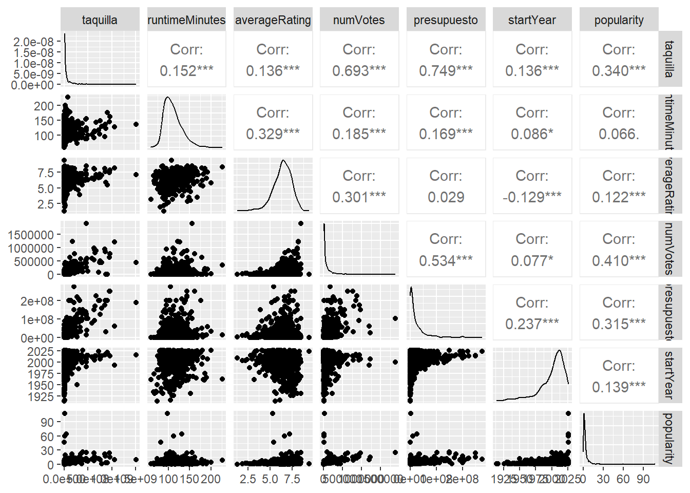
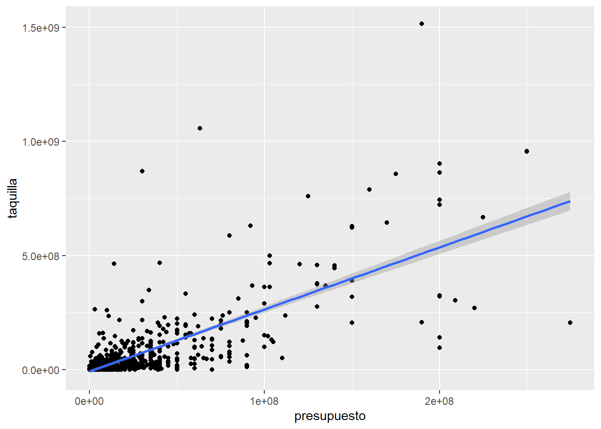
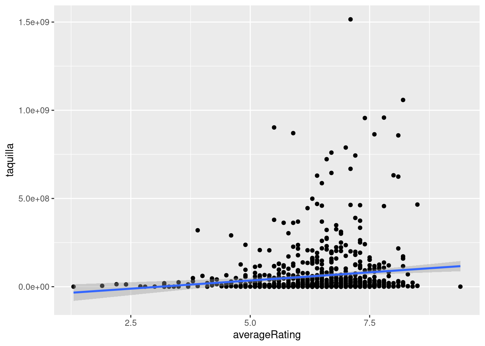
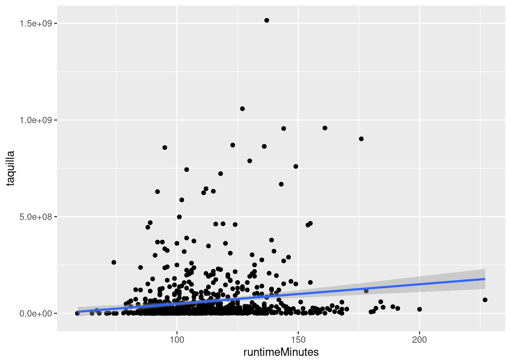
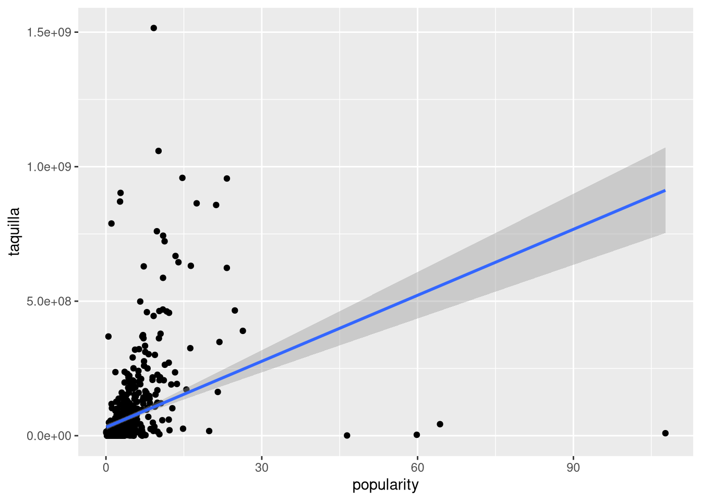
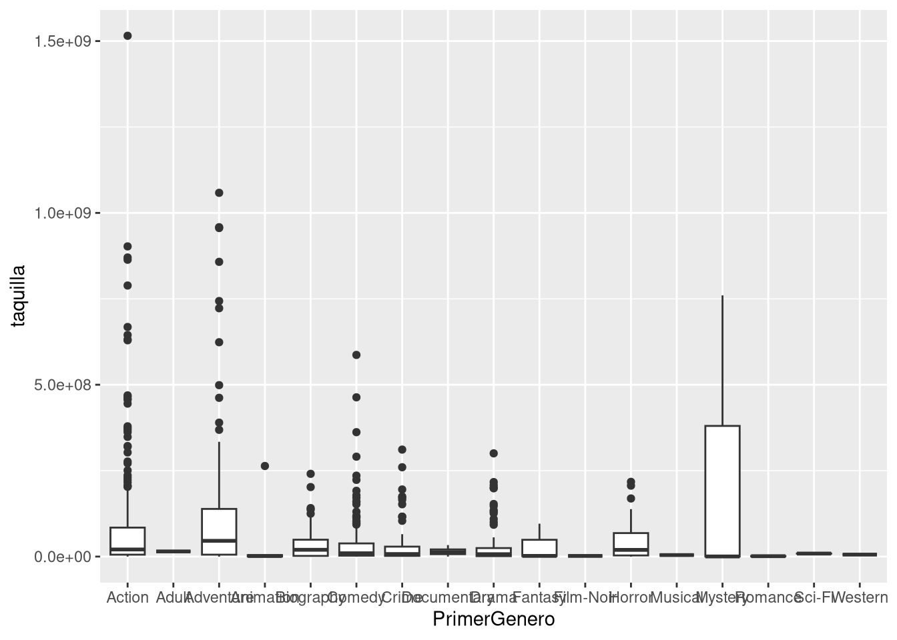
Se aprecian coeficientes de correlacion altos de taquilla con popularity y numVotes, tal y como se esperaba , aquí el gráfico que más nos brinda informacion es el ggpairs de la libreria GGally al brindarnos una vision global de las interacciones de nuestras variables.
Con esta informacion podremos iniciar la creacion de nuestros modelos.
Parte #3: Creación de los modelos
#|echo: false
#| message: false
attach(datos_bien)Como objetivo principal del documento se explorarà la creacion de modelos acordes a nuestra base de datos, es asì que se exploraràn distintas alternativas y se evaluaràn los fuertes de estos.
3.1 Modelos creados manualmente.
Iniciamos con el primer par de modelos definidos como:
modelo1 <- lm(taquilla ~ presupuesto + runtimeMinutes + popularity)
summary(modelo1) #Modelo inicial
Call:
lm(formula = taquilla ~ presupuesto + runtimeMinutes + popularity)
Residuals:
Min 1Q Median 3Q Max
-516304971 -22093829 1698558 12455834 1010750468
Coefficients:
Estimate Std. Error t value Pr(>|t|)
(Intercept) -3.146e+07 1.687e+07 -1.865 0.0626 .
presupuesto 2.567e+00 8.683e-02 29.569 < 2e-16 ***
runtimeMinutes 1.658e+05 1.510e+05 1.098 0.2726
popularity 2.780e+06 5.684e+05 4.891 1.2e-06 ***
---
Signif. codes: 0 '***' 0.001 '**' 0.01 '*' 0.05 '.' 0.1 ' ' 1
Residual standard error: 91720000 on 845 degrees of freedom
Multiple R-squared: 0.5738, Adjusted R-squared: 0.5723
F-statistic: 379.2 on 3 and 845 DF, p-value: < 2.2e-16modelo1_alterno <- lm(taquilla ~ presupuesto + popularity + PrimerGenero)
summary(modelo1_alterno)
Call:
lm(formula = taquilla ~ presupuesto + popularity + PrimerGenero)
Residuals:
Min 1Q Median 3Q Max
-513886533 -21360965 1141640 14367431 1019777451
Coefficients:
Estimate Std. Error t value Pr(>|t|)
(Intercept) -2.076e+07 7.398e+06 -2.806 0.00513 **
presupuesto 2.582e+00 9.119e-02 28.321 < 2e-16 ***
popularity 2.794e+06 5.828e+05 4.795 1.93e-06 ***
PrimerGeneroAdult 3.550e+07 9.219e+07 0.385 0.70030
PrimerGeneroAdventure 1.801e+07 1.199e+07 1.502 0.13354
PrimerGeneroAnimation 3.932e+07 3.544e+07 1.109 0.26756
PrimerGeneroBiography 6.546e+06 1.424e+07 0.460 0.64594
PrimerGeneroComedy 1.019e+07 9.038e+06 1.127 0.25993
PrimerGeneroCrime 7.465e+06 1.271e+07 0.587 0.55732
PrimerGeneroDocumentary -7.046e+05 3.321e+07 -0.021 0.98308
PrimerGeneroDrama 9.800e+05 1.032e+07 0.095 0.92438
PrimerGeneroFantasy -2.618e+07 5.411e+07 -0.484 0.62859
PrimerGeneroFilm-Noir 1.410e+07 9.217e+07 0.153 0.87847
PrimerGeneroHorror 2.065e+07 1.783e+07 1.158 0.24722
PrimerGeneroMusical 1.871e+07 9.218e+07 0.203 0.83923
PrimerGeneroMystery 1.493e+08 5.343e+07 2.794 0.00533 **
PrimerGeneroRomance 1.932e+07 6.539e+07 0.295 0.76771
PrimerGeneroSci-Fi -3.024e+07 6.531e+07 -0.463 0.64346
PrimerGeneroWestern 8.858e+06 9.218e+07 0.096 0.92348
---
Signif. codes: 0 '***' 0.001 '**' 0.01 '*' 0.05 '.' 0.1 ' ' 1
Residual standard error: 91890000 on 830 degrees of freedom
Multiple R-squared: 0.5798, Adjusted R-squared: 0.5706
F-statistic: 63.62 on 18 and 830 DF, p-value: < 2.2e-16Estos modelos son basados en las variables con mayores relaciones a nuestra variable objetivo taquilla. este se toma como punto inicial y base de la creacion manual de otros modelos.
datos_m1 <- datos_bien |> mutate(residuales1 = modelo1$residuals)
ggplot(data = datos_m1, aes(y = residuales1, x = numVotes)) + geom_point() +
geom_smooth(method = "lm") `geom_smooth()` using formula = 'y ~ x'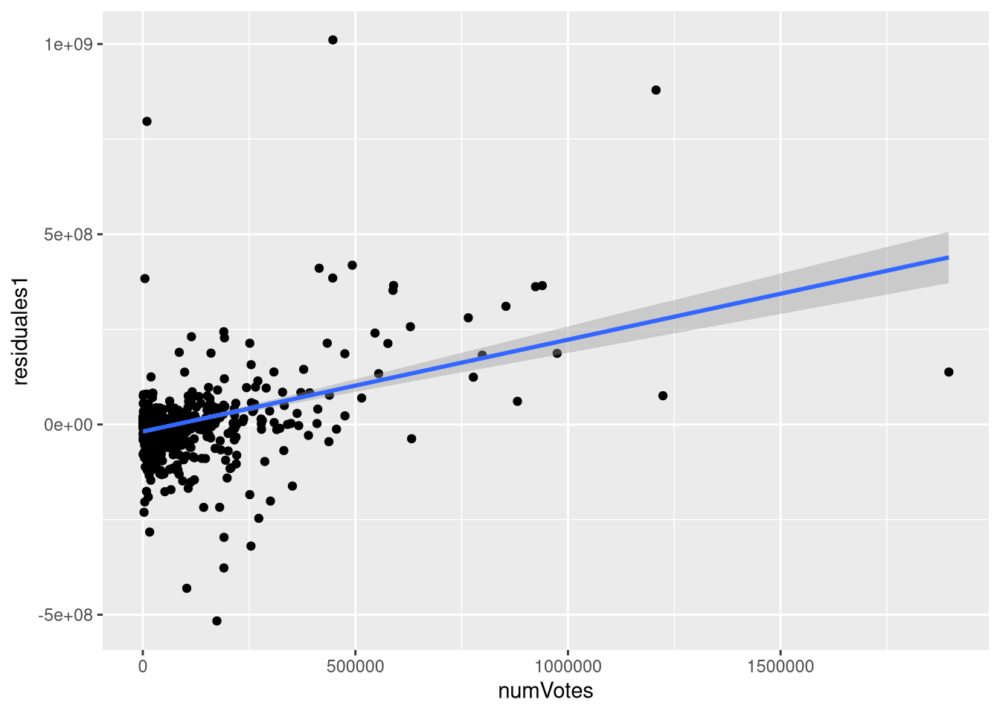
Tras realizar el examen de los residuales, se agrega numVotes como otra variable y se retirò RuntimeMinutes. Creando asì nuestro segundo modelo.
modelo2 <- update(modelo1, . ~ . - runtimeMinutes + numVotes)
summary(modelo2)
Call:
lm(formula = taquilla ~ presupuesto + popularity + numVotes)
Residuals:
Min 1Q Median 3Q Max
-430629435 -18888333 4642257 15353477 997969587
Coefficients:
Estimate Std. Error t value Pr(>|t|)
(Intercept) -1.632e+07 3.452e+06 -4.729 2.65e-06 ***
presupuesto 1.919e+00 8.399e-02 22.846 < 2e-16 ***
popularity 1.682e+05 5.158e+05 0.326 0.744
numVotes 3.749e+02 2.222e+01 16.871 < 2e-16 ***
---
Signif. codes: 0 '***' 0.001 '**' 0.01 '*' 0.05 '.' 0.1 ' ' 1
Residual standard error: 79380000 on 845 degrees of freedom
Multiple R-squared: 0.6807, Adjusted R-squared: 0.6796
F-statistic: 600.6 on 3 and 845 DF, p-value: < 2.2e-16omcdiag(modelo2)
Call:
omcdiag(mod = modelo2)
Overall Multicollinearity Diagnostics
MC Results detection
Determinant |X'X|: 0.5853 0
Farrar Chi-Square: 453.1707 1
Red Indicator: 0.4292 0
Sum of Lambda Inverse: 4.1813 0
Theil's Method: -0.5339 0
Condition Number: 2.8261 0
1 --> COLLINEARITY is detected by the test
0 --> COLLINEARITY is not detected by the testimcdiag(modelo2)
Call:
imcdiag(mod = modelo2)
All Individual Multicollinearity Diagnostics Result
VIF TOL Wi Fi Leamer CVIF Klein IND1 IND2
presupuesto 1.4215 0.7035 178.3153 357.0522 0.8387 -2.8976 0 0.0017 1.0750
popularity 1.2207 0.8192 93.3386 186.8978 0.9051 -2.4881 0 0.0019 0.6553
numVotes 1.5391 0.6497 228.0318 456.6028 0.8061 -3.1371 0 0.0015 1.2697
1 --> COLLINEARITY is detected by the test
0 --> COLLINEARITY is not detected by the test
popularity , coefficient(s) are non-significant may be due to multicollinearity
R-square of y on all x: 0.6807
* use method argument to check which regressors may be the reason of collinearity
===================================car::vif(modelo2)presupuesto popularity numVotes
1.421549 1.220659 1.539082 modelo2_alternativo <- update(modelo1, .~. -runtimeMinutes)
summary(modelo2_alternativo)
Call:
lm(formula = taquilla ~ presupuesto + popularity)
Residuals:
Min 1Q Median 3Q Max
-521081261 -21822028 1751641 11802771 1012560528
Coefficients:
Estimate Std. Error t value Pr(>|t|)
(Intercept) -1.346e+07 3.984e+06 -3.380 0.000759 ***
presupuesto 2.582e+00 8.577e-02 30.109 < 2e-16 ***
popularity 2.788e+06 5.684e+05 4.906 1.12e-06 ***
---
Signif. codes: 0 '***' 0.001 '**' 0.01 '*' 0.05 '.' 0.1 ' ' 1
Residual standard error: 91730000 on 846 degrees of freedom
Multiple R-squared: 0.5732, Adjusted R-squared: 0.5722
F-statistic: 568.1 on 2 and 846 DF, p-value: < 2.2e-16Este segundo modelo retira runtimeMinutes e incorpora numVotes (solo en modelo2 no en modelo2_alternativo), el cual tras realizar comprobaciones de colinealidad dan indicaciones de ser colineales (Esta relacion es entendible pues entre mas gente interactua con la pàgina de la pelìcula dada la misma obtendra mas calificaciones).
Se realizan los siguientes gràficos para la comprobacion de los residuales con otras variables:
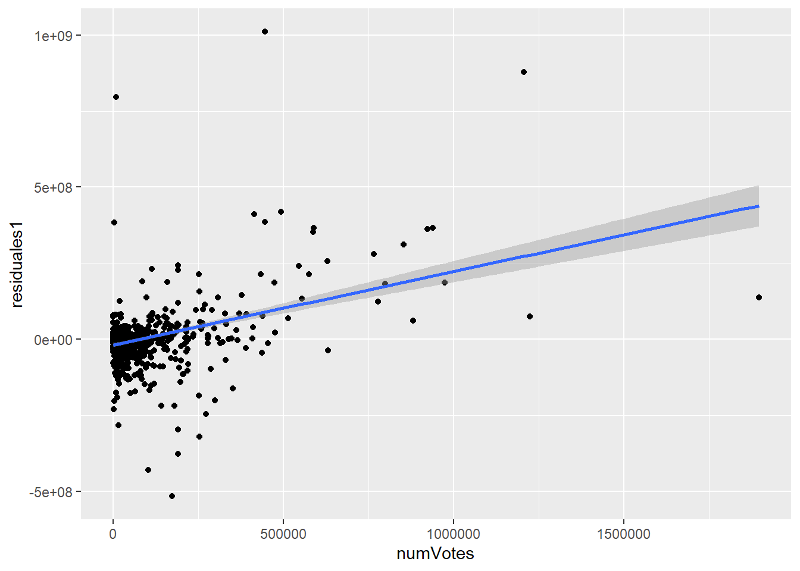
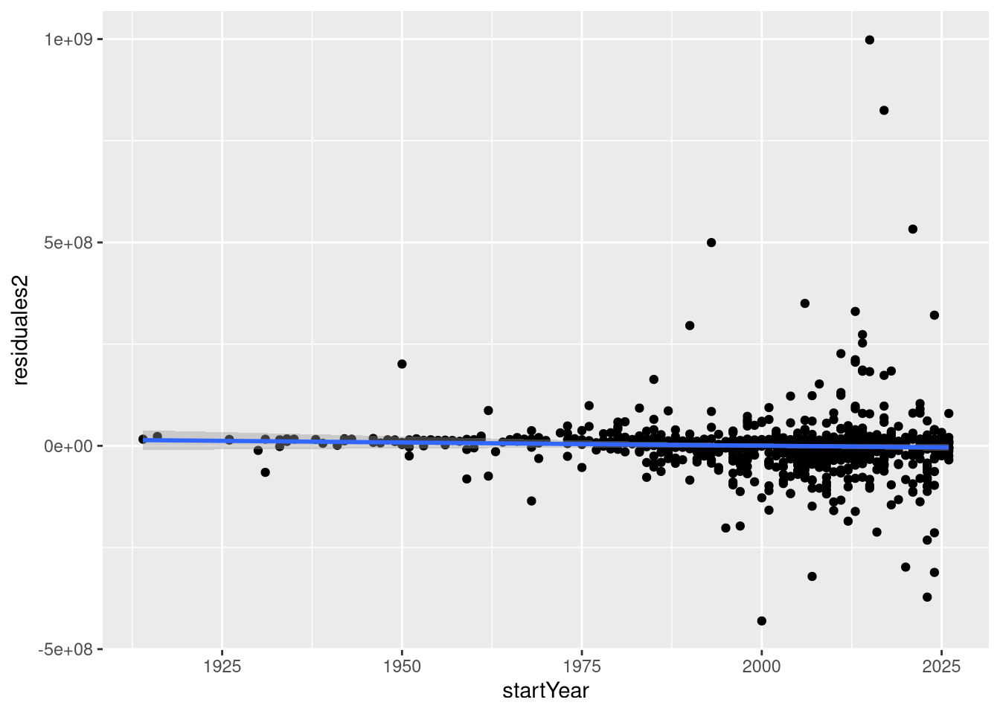
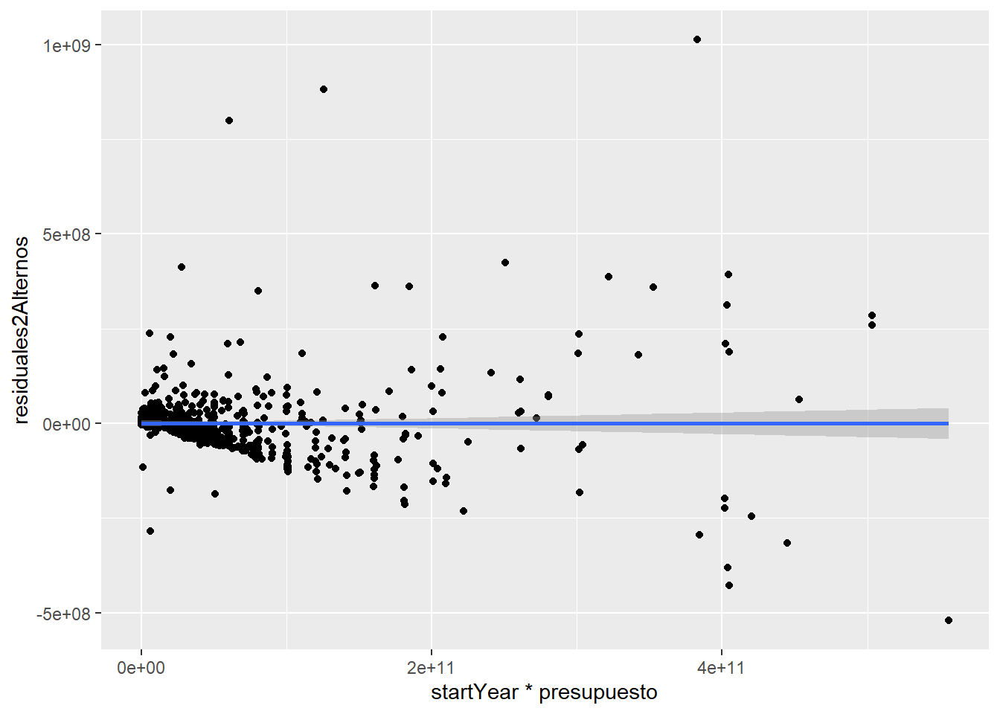
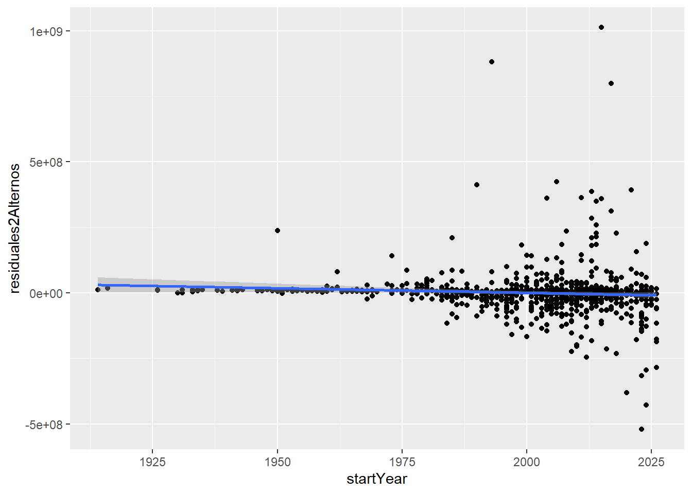
Tras analisar estos datos se llega a un modelo nùmero 3, donde se adapta nuestro modelo2_alternativo y se le agregarà la relacion startYear:presupuesto
modelo3 <- update(modelo2_alternativo, . ~ . + startYear:presupuesto)
summary(modelo3)
Call:
lm(formula = taquilla ~ presupuesto + popularity + presupuesto:startYear)
Residuals:
Min 1Q Median 3Q Max
-439619812 -22905666 3806803 14626746 1023791842
Coefficients:
Estimate Std. Error t value Pr(>|t|)
(Intercept) -1.740e+07 4.092e+06 -4.253 2.34e-05 ***
presupuesto 6.384e+01 1.638e+01 3.898 0.000105 ***
popularity 2.833e+06 5.642e+05 5.021 6.26e-07 ***
presupuesto:startYear -3.042e-02 8.134e-03 -3.740 0.000196 ***
---
Signif. codes: 0 '***' 0.001 '**' 0.01 '*' 0.05 '.' 0.1 ' ' 1
Residual standard error: 91030000 on 845 degrees of freedom
Multiple R-squared: 0.5802, Adjusted R-squared: 0.5787
F-statistic: 389.2 on 3 and 845 DF, p-value: < 2.2e-16AIC(modelo2_alternativo)[1] 33546.06AIC(modelo3) #Mejor pero no estoy del todo seguro por el análisis visual[1] 33534.12datos_m3 <- datos_m2 |> mutate(residuales3 = modelo3$residuals)
ggplot(data = datos_m3, aes(y = residuales3, x = startYear)) + geom_point() +
geom_smooth(method = "lm")`geom_smooth()` using formula = 'y ~ x'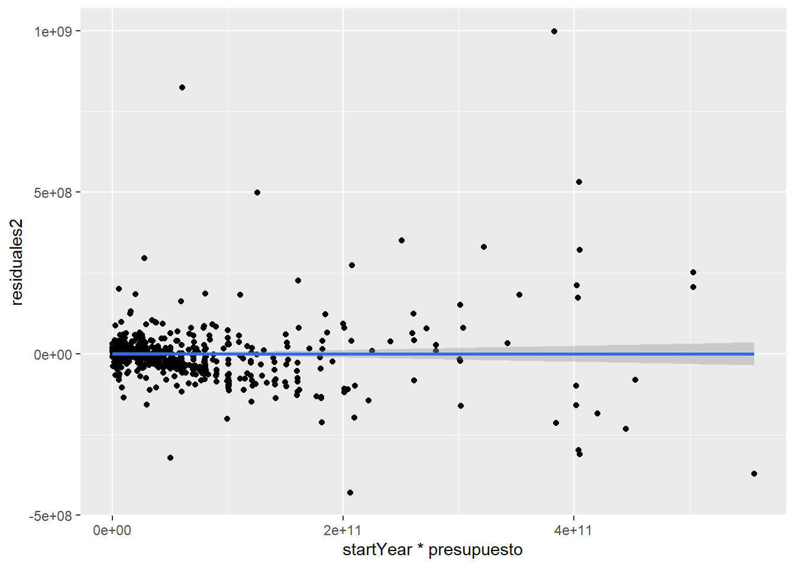
modelo3_alterno <- update(modelo3, .~. +startYear)
summary(modelo3_alterno)
Call:
lm(formula = taquilla ~ presupuesto + popularity + startYear +
presupuesto:startYear)
Residuals:
Min 1Q Median 3Q Max
-449578194 -22818682 1951895 15429837 1021468315
Coefficients:
Estimate Std. Error t value Pr(>|t|)
(Intercept) 3.828e+08 3.458e+08 1.107 0.268609
presupuesto 5.750e+01 1.727e+01 3.330 0.000905 ***
popularity 2.877e+06 5.654e+05 5.088 4.46e-07 ***
startYear -2.001e+05 1.729e+05 -1.157 0.247432
presupuesto:startYear -2.726e-02 8.578e-03 -3.178 0.001535 **
---
Signif. codes: 0 '***' 0.001 '**' 0.01 '*' 0.05 '.' 0.1 ' ' 1
Residual standard error: 91010000 on 844 degrees of freedom
Multiple R-squared: 0.5808, Adjusted R-squared: 0.5788
F-statistic: 292.4 on 4 and 844 DF, p-value: < 2.2e-16De nuevo, se realizan verificaciones de colinealidad:
omcdiag(modelo3_alterno)
Call:
omcdiag(mod = modelo3_alterno)
Overall Multicollinearity Diagnostics
MC Results detection
Determinant |X'X|: 0.0000 1
Farrar Chi-Square: 9217.6615 1
Red Indicator: 0.4709 0
Sum of Lambda Inverse: 91437.5431 1
Theil's Method: 0.5168 1
Condition Number: 680.5304 1
1 --> COLLINEARITY is detected by the test
0 --> COLLINEARITY is not detected by the testimcdiag(modelo3_alterno)
Call:
imcdiag(mod = modelo3_alterno)
All Individual Multicollinearity Diagnostics Result
VIF TOL Wi Fi Leamer
presupuesto 45700.1668 0.0000 1.287193e+07 1.933075e+07 0.0047
popularity 1.1154 0.8965 3.250970e+01 4.882220e+01 0.9468
startYear 1.1846 0.8442 5.199280e+01 7.808140e+01 0.9188
presupuesto:startYear 45735.0763 0.0000 1.288176e+07 1.934551e+07 0.0047
CVIF Klein IND1 IND2
presupuesto -74892.9656 1 0.0000 1.7705
popularity -1.8279 0 0.0032 0.1832
startYear -1.9413 0 0.0030 0.2759
presupuesto:startYear -74950.1750 1 0.0000 1.7705
1 --> COLLINEARITY is detected by the test
0 --> COLLINEARITY is not detected by the test
startYear , coefficient(s) are non-significant may be due to multicollinearity
R-square of y on all x: 0.5808
* use method argument to check which regressors may be the reason of collinearity
===================================car::vif(modelo3_alterno)there are higher-order terms (interactions) in this model
consider setting type = 'predictor'; see ?vif presupuesto popularity startYear
45700.166791 1.115419 1.184590
presupuesto:startYear
45735.076287 Con las cuales identificamos colinealidad entre presupuesto:startYear y presupuesto, la cual se agregò como prueba en modelo3_alternativo
Se decide crear un cuarto modelo añadiendo el averageRating
modelo4 <- update(modelo3, . ~ . + averageRating)
summary(modelo4)
Call:
lm(formula = taquilla ~ presupuesto + popularity + averageRating +
presupuesto:startYear)
Residuals:
Min 1Q Median 3Q Max
-429961888 -24098295 -848111 17095691 1014564612
Coefficients:
Estimate Std. Error t value Pr(>|t|)
(Intercept) -1.022e+08 1.945e+07 -5.253 1.90e-07 ***
presupuesto 6.014e+01 1.622e+01 3.707 0.000223 ***
popularity 2.532e+06 5.621e+05 4.505 7.58e-06 ***
averageRating 1.346e+07 3.021e+06 4.455 9.50e-06 ***
presupuesto:startYear -2.858e-02 8.055e-03 -3.548 0.000410 ***
---
Signif. codes: 0 '***' 0.001 '**' 0.01 '*' 0.05 '.' 0.1 ' ' 1
Residual standard error: 90030000 on 844 degrees of freedom
Multiple R-squared: 0.5898, Adjusted R-squared: 0.5879
F-statistic: 303.4 on 4 and 844 DF, p-value: < 2.2e-16modelo4_alterno <- update(modelo3, . ~ . - presupuesto:startYear + startYear)
summary(modelo4_alterno)
Call:
lm(formula = taquilla ~ presupuesto + popularity + startYear)
Residuals:
Min 1Q Median 3Q Max
-523896047 -21306269 -853475 14447245 1010391654
Coefficients:
Estimate Std. Error t value Pr(>|t|)
(Intercept) 7.355e+08 3.292e+08 2.234 0.0258 *
presupuesto 2.623e+00 8.743e-02 30.005 < 2e-16 ***
popularity 2.878e+06 5.684e+05 5.064 5.04e-07 ***
startYear -3.749e+05 1.648e+05 -2.275 0.0232 *
---
Signif. codes: 0 '***' 0.001 '**' 0.01 '*' 0.05 '.' 0.1 ' ' 1
Residual standard error: 91500000 on 845 degrees of freedom
Multiple R-squared: 0.5758, Adjusted R-squared: 0.5743
F-statistic: 382.3 on 3 and 845 DF, p-value: < 2.2e-16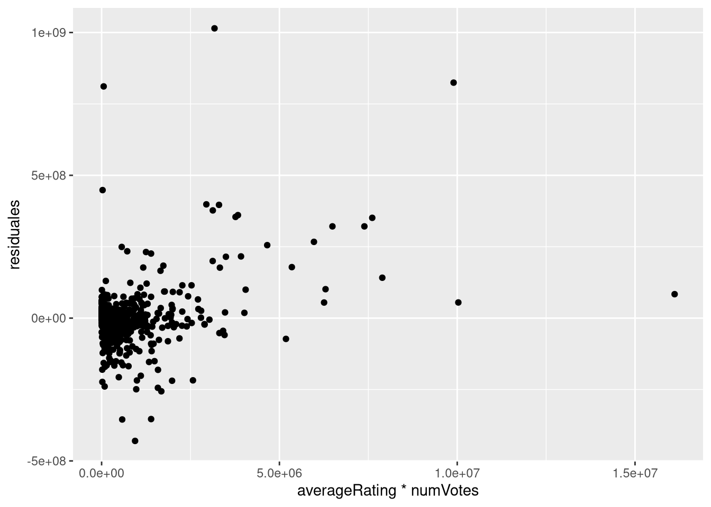
Este cuarto modelo presenta mejoras en nuestro \(R²_{adj}\), se adaptarà un quinto modelo probando la inclusion de startYear , averageRating y presupuesto:startYear al tercer modelo.
modelo5 <- update(modelo3, . ~ . - presupuesto:startYear + startYear + averageRating)
summary(modelo5)
Call:
lm(formula = taquilla ~ presupuesto + popularity + startYear +
averageRating)
Residuals:
Min 1Q Median 3Q Max
-508721381 -23647489 -2471284 15739211 1002588604
Coefficients:
Estimate Std. Error t value Pr(>|t|)
(Intercept) 4.381e+08 3.330e+08 1.315 0.189
presupuesto 2.615e+00 8.655e-02 30.219 < 2e-16 ***
popularity 2.559e+06 5.674e+05 4.510 7.40e-06 ***
startYear -2.679e+05 1.650e+05 -1.624 0.105
averageRating 1.326e+07 3.070e+06 4.320 1.74e-05 ***
---
Signif. codes: 0 '***' 0.001 '**' 0.01 '*' 0.05 '.' 0.1 ' ' 1
Residual standard error: 90560000 on 844 degrees of freedom
Multiple R-squared: 0.585, Adjusted R-squared: 0.583
F-statistic: 297.4 on 4 and 844 DF, p-value: < 2.2e-16##Revisión multicolinealidad
omcdiag(modelo5)
Call:
omcdiag(mod = modelo5)
Overall Multicollinearity Diagnostics
MC Results detection
Determinant |X'X|: 0.8147 0
Farrar Chi-Square: 173.3653 1
Red Indicator: 0.1858 0
Sum of Lambda Inverse: 4.4222 0
Theil's Method: -1.3795 0
Condition Number: 291.9460 1
1 --> COLLINEARITY is detected by the test
0 --> COLLINEARITY is not detected by the testimcdiag(modelo5)
Call:
imcdiag(mod = modelo5)
All Individual Multicollinearity Diagnostics Result
VIF TOL Wi Fi Leamer CVIF Klein IND1 IND2
presupuesto 1.1596 0.8624 44.9577 67.5164 0.9286 1.6822 0 0.0031 1.4664
popularity 1.1347 0.8813 37.9406 56.9782 0.9388 1.6460 0 0.0031 1.2647
startYear 1.0893 0.9180 25.1439 37.7605 0.9581 1.5801 0 0.0033 0.8731
averageRating 1.0386 0.9629 10.8674 16.3204 0.9812 1.5066 0 0.0034 0.3958
1 --> COLLINEARITY is detected by the test
0 --> COLLINEARITY is not detected by the test
startYear , coefficient(s) are non-significant may be due to multicollinearity
R-square of y on all x: 0.585
* use method argument to check which regressors may be the reason of collinearity
===================================car::vif(modelo5) presupuesto popularity startYear averageRating
1.159613 1.134700 1.089268 1.038582 Como untimo cambio a nuestro modelo creado de manera manual crearemos la sexta iteracion de nuestro modelo creado “a ojo” eliminando la variable startYear por la colinealidad con startYear:presupuesto
modelo6 <- update(modelo5, .~. - startYear)
summary(modelo6)
Call:
lm(formula = taquilla ~ presupuesto + popularity + averageRating)
Residuals:
Min 1Q Median 3Q Max
-505898793 -24220006 -2841767 15745746 1003663737
Coefficients:
Estimate Std. Error t value Pr(>|t|)
(Intercept) -1.019e+08 1.958e+07 -5.205 2.43e-07 ***
presupuesto 2.586e+00 8.476e-02 30.513 < 2e-16 ***
popularity 2.478e+06 5.657e+05 4.380 1.34e-05 ***
averageRating 1.401e+07 3.038e+06 4.612 4.61e-06 ***
---
Signif. codes: 0 '***' 0.001 '**' 0.01 '*' 0.05 '.' 0.1 ' ' 1
Residual standard error: 90650000 on 845 degrees of freedom
Multiple R-squared: 0.5837, Adjusted R-squared: 0.5822
F-statistic: 394.9 on 3 and 845 DF, p-value: < 2.2e-16omcdiag(modelo6)
Call:
omcdiag(mod = modelo6)
Overall Multicollinearity Diagnostics
MC Results detection
Determinant |X'X|: 0.8874 0
Farrar Chi-Square: 101.0811 1
Red Indicator: 0.1956 0
Sum of Lambda Inverse: 3.2513 0
Theil's Method: -0.9413 0
Condition Number: 14.9602 0
1 --> COLLINEARITY is detected by the test
0 --> COLLINEARITY is not detected by the testimcdiag(modelo6)
Call:
imcdiag(mod = modelo6)
All Individual Multicollinearity Diagnostics Result
VIF TOL Wi Fi Leamer CVIF Klein IND1 IND2
presupuesto 1.1101 0.9008 46.5841 93.2784 0.9491 1.5177 0 0.0021 1.3166
popularity 1.1260 0.8881 53.2782 106.6823 0.9424 1.5394 0 0.0021 1.4847
averageRating 1.0152 0.9850 6.4301 12.8754 0.9925 1.3880 0 0.0023 0.1987
1 --> COLLINEARITY is detected by the test
0 --> COLLINEARITY is not detected by the test
* all coefficients have significant t-ratios
R-square of y on all x: 0.5837
* use method argument to check which regressors may be the reason of collinearity
===================================car::vif(modelo6) presupuesto popularity averageRating
1.110128 1.125953 1.015201 Este último modelo creado manualmente se adapta de manera correcta a nuestros objetivos, a continuacion se compará al modelo creado automáticamente por el comando step().
3.2 Modelo optimizado, Funcion step()
A la par de la creacion manual de nuestros modelos y llegar a nuestro modelo deseado tambien se aplicarà la funcion step() con el objetivo de crear un modelo optimizado de manera automàtica.
Para esto se define en primer lugar nuestro modelo “full”, o en este caso, 2 modelos “full”; uno incluyendo nuestra varriable categorica PrimerGenero y otra sin esta categórica
modelo_full <- lm(taquilla ~ (runtimeMinutes + averageRating + numVotes + presupuesto +
startYear + popularity + PrimerGenero)^2)
summary(modelo_full)
modelo_full2 <- lm(taquilla ~ (runtimeMinutes + averageRating + numVotes + presupuesto +
startYear + popularity)^2)
summary(modelo_full2)Corremos el comando steps()
modelo_optimizado <- step(modelo_full)
modelo_optimizado2 <- step(modelo_full2)
summary(modelo_optimizado2)Y obtenemos Nuestro modelo optimizado:
summary(modelo_optimizado)
Call:
lm(formula = taquilla ~ runtimeMinutes + averageRating + numVotes +
presupuesto + startYear + popularity + PrimerGenero + runtimeMinutes:numVotes +
runtimeMinutes:presupuesto + averageRating:numVotes + averageRating:presupuesto +
averageRating:startYear + numVotes:presupuesto + numVotes:startYear +
numVotes:popularity + presupuesto:PrimerGenero + startYear:popularity)
Residuals:
Min 1Q Median 3Q Max
-317593167 -16137496 -753508 9666754 958579064
Coefficients: (4 not defined because of singularities)
Estimate Std. Error t value Pr(>|t|)
(Intercept) 3.437e+09 1.915e+09 1.794 0.073110 .
runtimeMinutes 1.640e+05 1.606e+05 1.021 0.307540
averageRating -5.089e+08 2.898e+08 -1.756 0.079439 .
numVotes 2.133e+04 5.535e+03 3.853 0.000126 ***
presupuesto -2.861e+00 7.306e-01 -3.916 9.77e-05 ***
startYear -1.711e+06 9.572e+05 -1.787 0.074312 .
popularity -1.952e+08 1.346e+08 -1.450 0.147454
PrimerGeneroAdult 1.781e+07 7.214e+07 0.247 0.805094
PrimerGeneroAdventure 5.708e+06 1.218e+07 0.469 0.639424
PrimerGeneroAnimation 3.256e+07 4.775e+07 0.682 0.495533
PrimerGeneroBiography 1.618e+06 1.584e+07 0.102 0.918659
PrimerGeneroComedy 1.607e+06 8.971e+06 0.179 0.857857
PrimerGeneroCrime 3.781e+06 1.303e+07 0.290 0.771843
PrimerGeneroDocumentary 1.921e+07 3.373e+07 0.570 0.569102
PrimerGeneroDrama 2.759e+06 9.818e+06 0.281 0.778800
PrimerGeneroFantasy -7.748e+06 5.326e+07 -0.145 0.884377
PrimerGeneroFilm-Noir 3.868e+06 7.196e+07 0.054 0.957147
PrimerGeneroHorror -9.407e+05 1.753e+07 -0.054 0.957211
PrimerGeneroMusical 2.235e+07 7.218e+07 0.310 0.756961
PrimerGeneroMystery -6.625e+06 5.250e+07 -0.126 0.899614
PrimerGeneroRomance 5.780e+07 5.831e+08 0.099 0.921065
PrimerGeneroSci-Fi 5.486e+07 2.705e+08 0.203 0.839356
PrimerGeneroWestern 7.412e+06 7.261e+07 0.102 0.918719
runtimeMinutes:numVotes -7.629e+00 9.806e-01 -7.780 2.21e-14 ***
runtimeMinutes:presupuesto 2.465e-02 3.568e-03 6.908 9.96e-12 ***
averageRating:numVotes -5.876e+01 3.930e+01 -1.495 0.135302
averageRating:presupuesto 1.797e-01 1.051e-01 1.709 0.087889 .
averageRating:startYear 2.515e+05 1.447e+05 1.738 0.082637 .
numVotes:presupuesto 1.997e-06 4.107e-07 4.863 1.39e-06 ***
numVotes:startYear -9.767e+00 2.681e+00 -3.643 0.000287 ***
numVotes:popularity -6.456e+00 3.753e+00 -1.720 0.085817 .
presupuesto:PrimerGeneroAdult NA NA NA NA
presupuesto:PrimerGeneroAdventure 6.423e-01 1.850e-01 3.473 0.000543 ***
presupuesto:PrimerGeneroAnimation -2.643e+00 9.401e+00 -0.281 0.778698
presupuesto:PrimerGeneroBiography -4.301e-01 5.987e-01 -0.719 0.472655
presupuesto:PrimerGeneroComedy -7.086e-02 2.747e-01 -0.258 0.796523
presupuesto:PrimerGeneroCrime -3.616e-01 4.959e-01 -0.729 0.466124
presupuesto:PrimerGeneroDocumentary -6.441e-01 1.662e+00 -0.388 0.698364
presupuesto:PrimerGeneroDrama -7.448e-01 2.979e-01 -2.500 0.012625 *
presupuesto:PrimerGeneroFantasy 1.586e+00 2.576e+00 0.615 0.538406
presupuesto:PrimerGeneroFilm-Noir NA NA NA NA
presupuesto:PrimerGeneroHorror 1.125e-01 7.080e-01 0.159 0.873810
presupuesto:PrimerGeneroMusical NA NA NA NA
presupuesto:PrimerGeneroMystery 2.698e+00 7.382e-01 3.655 0.000274 ***
presupuesto:PrimerGeneroRomance -1.426e+02 1.263e+03 -0.113 0.910143
presupuesto:PrimerGeneroSci-Fi -3.600e+00 1.264e+01 -0.285 0.775927
presupuesto:PrimerGeneroWestern NA NA NA NA
startYear:popularity 9.656e+04 6.647e+04 1.453 0.146711
---
Signif. codes: 0 '***' 0.001 '**' 0.01 '*' 0.05 '.' 0.1 ' ' 1
Residual standard error: 71230000 on 805 degrees of freedom
Multiple R-squared: 0.7551, Adjusted R-squared: 0.742
F-statistic: 57.73 on 43 and 805 DF, p-value: < 2.2e-16summary(modelo_optimizado2)
Call:
lm(formula = taquilla ~ runtimeMinutes + averageRating + numVotes +
presupuesto + startYear + popularity + runtimeMinutes:numVotes +
runtimeMinutes:presupuesto + averageRating:presupuesto +
averageRating:startYear + numVotes:presupuesto + numVotes:startYear +
numVotes:popularity)
Residuals:
Min 1Q Median 3Q Max
-278731921 -17689914 -1264439 11031957 913127566
Coefficients:
Estimate Std. Error t value Pr(>|t|)
(Intercept) 2.884e+09 1.917e+09 1.504 0.132977
runtimeMinutes 7.948e+04 1.534e+05 0.518 0.604484
averageRating -4.652e+08 2.893e+08 -1.608 0.108178
numVotes 1.595e+04 3.895e+03 4.094 4.66e-05 ***
presupuesto -2.842e+00 6.667e-01 -4.263 2.25e-05 ***
startYear -1.426e+06 9.586e+05 -1.487 0.137351
popularity 5.754e+05 4.882e+05 1.179 0.238928
runtimeMinutes:numVotes -7.535e+00 9.221e-01 -8.172 1.12e-15 ***
runtimeMinutes:presupuesto 2.033e-02 3.435e-03 5.918 4.76e-09 ***
averageRating:presupuesto 2.860e-01 8.785e-02 3.256 0.001176 **
averageRating:startYear 2.287e+05 1.445e+05 1.583 0.113872
numVotes:presupuesto 2.427e-06 3.774e-07 6.430 2.15e-10 ***
numVotes:startYear -7.330e+00 1.928e+00 -3.802 0.000154 ***
numVotes:popularity -9.531e+00 2.799e+00 -3.405 0.000693 ***
---
Signif. codes: 0 '***' 0.001 '**' 0.01 '*' 0.05 '.' 0.1 ' ' 1
Residual standard error: 72580000 on 835 degrees of freedom
Multiple R-squared: 0.7363, Adjusted R-squared: 0.7321
F-statistic: 179.3 on 13 and 835 DF, p-value: < 2.2e-16AIC(modelo5)[1] 33526.3AIC(modelo_optimizado2)[1] 33159.41AIC(modelo_optimizado)[1] 33156.38Realizando la comparaciòn de nuestro modelo manual con nuestro modelo creado automàticamente con la funcion step() podemos apreciar: